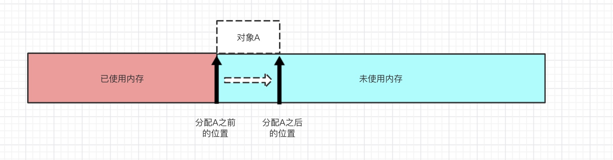
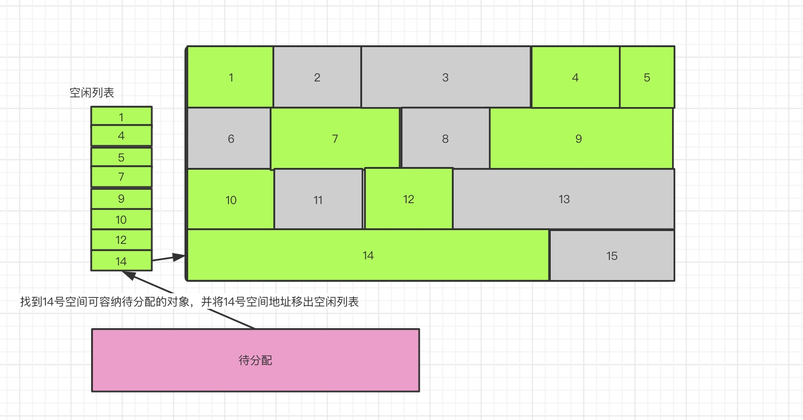
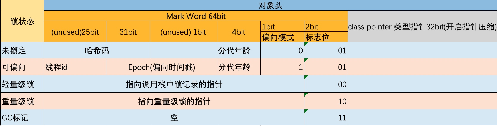

在java程序运行的过程中，无时无刻都有对象被不断的创建出来。我们创建一个对象通常都是通过new关键字，但是jvm是怎么把一个对象给整出来的呢？
对象的创建
Java中有5种创建对象的方式：
| 创建方式 | 是否调用构造函数 |
|---|---|
| new关键字 | 调用构造函数进行初始化 |
| Class.forName().instance()、Object.class.newInstance() | Class.forName加载并连接类，newInstance()调用构造函数进行初始化 |
| Constructor类的NewInstance() | 调用构造函数进行初始化 |
| Clone() | 没有调用构造函数 |
| 反序列化 | 没有调用构造函数 |
这里我们只对new关键字进行分析
当JVM遇到new关键字创建普通的java对象(不包括数组和Class对象等)时，首先检查这个指令的参数是否能在常量池中定位到一个类的符号引用，并且检查这个符号引用代表的类是否已被加载、解析和初始化过，如果没有那么必须执行相应的加载过程()。
在类加载检查通过后，接下来虚拟机为新生对象分配内存(类加载完成后即可知其大小)，jvm将一块确定大小的内存块从java堆中划拨出来。在划拨堆内存出来的时候，会涉及到如何分配的问题，下面有两种分配方式
指针碰撞
定义： 假设堆内存是规整的，所有使用过的堆内存放在一边，空闲的内存被放在另一边，中间放着一个指针作为分界点的指示器，那所分配内存就是是把这个指针向空闲空间方向移动一段与对象大小相等的的距离。
空闲列表
如果堆内存是不规整的，已使用和未被使用的内存是交错在一起的，那就没办法简简单单地进行“指针碰撞”了，虚拟机就必须维护一个用来记录那些内存块是可用的列表，在分配对象的时候找一个内存大小适中的内存空间划分给对象，并更新列表上的记录，这种分配方式被称为空闲列表

选择哪种分配方式有java堆是否规整决定，堆是否规整取决于jvm采用哪种垃圾回收器(垃圾收集器)来决定。
因此采用复制算法、标记整理算法的收集器时，系统采用“指针碰撞“，而采用CMS这种基于清除算法的收集器时，采用”空闲列表“来分配。
但是在并发情况下，即使是”指针碰撞“这种仅仅是移动指针所指向位置的操作，也并不是线程安全的，可能出现正在给对象A分配内存，指针还没来得及修改，对象B又同时使用了原来的指针来分配内存的情况。
解决上面所说的问题有两种可选方案
- 分配内存空间的动作进行同步处理（JVM是采用CAS配上失败重试的方式保证更新操作的原子性）
- 把内存分配的动作按照线程划分在不同的空间之中进行，即每个线程在java堆中预先分配一小块内存，称为本地线程分配缓冲(Thread Local Allocation Buffer， TLAB)，哪个线程要分分配内存就在哪个线程的TLAB中分配，TLAB使用完了，分配新的缓存区时才需要同步锁定
内存分配完成之后， JVM必须将分配到的内存空间(不包括对象头)都进行初始化，这样保证了在代码中可以不赋初值就可以直接使用。
接下来JVM还要对对象进行必要的设置，例如对象是哪个类的实例、如何才能找到类的元数据信息、对象的哈希码、对象的GC分代年龄、是否使用偏向锁等信息，这些信息存放在java的对象头中。
接下来对象的创建猜刚刚开始----构造函数，即Class文件中的
对象的内存布局
对象在堆内存中存储布局可以划分为三部分：对象头(Object Header)、实例数据(Instance Data)、对齐填充(Padding)。
对象头
对象头分两部分：Mark Word、class pointer(类型指针)
- Mark Word的组成以及布局情况
下图是在64位虚拟机上的对象头的堆内存布局：

通过Jol工具可以查看对象信息,例如查看Object对象的信息如下：
Object a = new Object();
System.out.println(ClassLayout.parseInstance(a).toPrintable());
-----------------------------------------------------------------------
java.lang.Object object internals:
OFFSET SIZE TYPE DESCRIPTION VALUE
0 4 (object header) 01 00 00 00 (00000001 00000000 00000000 00000000) (1)
4 4 (object header) 00 00 00 00 (00000000 00000000 00000000 00000000) (0)
8 4 (object header) e5 01 00 f8 (11100101 00000001 00000000 11111000) (-134217243)
12 4 (loss due to the next object alignment)
Instance size: 16 bytes
Space losses: 0 bytes internal + 4 bytes external = 4 bytes total
从输出结果可以看到Object对象的大小总共占用 4 bytes的内存
- 类型指针
对象指向它的类型元数据指针，java虚拟机通过这个指针来确定对象是哪个类的实例。
实例数据
用来存储真正的有效信息，即我们在程序代码里面所定义的各种类型的字段内容。
对齐填充
这部分仅仅是起到占位符的作用。由于jvm的自动内存管理系统要求任何对象的大小必须是8字节的整数倍，如果对象实例数据没有对齐的话，则通过对齐填充来进行补全，使其大小是8字节的整数倍(对象头已经被设计成正好是8字节的整数倍的结构了)
对象访问定位
创建完对象之后，就到了使用对象的时候了。JVM会通过虚拟机栈上的reference（指向对象的引用）数据来操作堆上的具体对象。
jvm主要有两种访问对象的方式：
使用句柄访问
java堆内存中将可能划分出一块内存作为句柄池，reference中存储的就是对象的句柄地址，句柄中包含了对象的实例数据与类型数据各自具体的地址信息。
当对象改变之后，只需要改变句柄中的实例数据的指针地址，而句柄本身的地址这不会改变，那么reference的引用也不会改变。使用直接指针访问
reference中存储的直接就是对象的地址，直接访问对象的话，一步到位，访问速度会更加迅速。